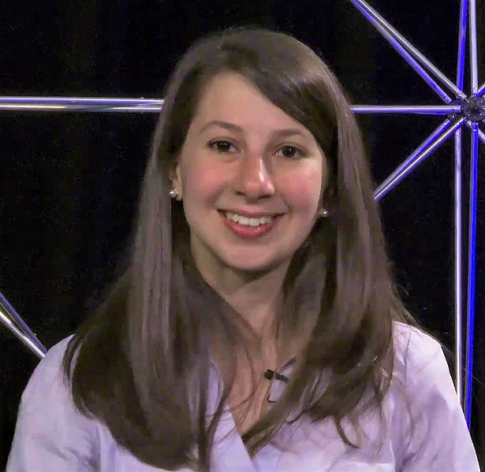

Katie Bouman
Katherine Louise Bouman (West Lafayette, Indiana, 9 de maio de 1989) é uma professora assistente de ciência da computação no Instituto de Tecnologia da Califórnia. Ela pesquisa métodos computacionais para geração de imagens e foi uma das pessoas responsáveis pela reprodução da primeira imagem de um buraco negro. Bouman foi responsável pela liderança e desenvolvimento do algoritmo responsável pelo cruzamento e correção de dados obtidos usando o Event Horizon Telescope.